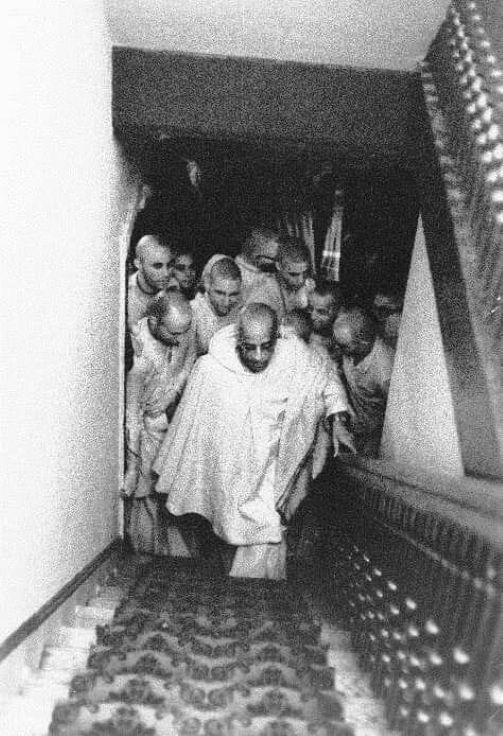

"The Ideal Leader"
Posted on : 10th March, 2025

"This is not good, this unsteady position. I have never been in favor of this practice of many times changing the responsible officers, three times in one week changing presidents, this will ruin the whole thing. From now on if someone takes the leading post, he must agree to stick and not go away just because it is difficult from time to time. That is ideal leader. He is responsible and he knows his duty. Just like I did that. My Guru Maharaja gave me a task and always I was discouraged by my god-brothers, but I did not forget him even for a moment, and I was determined to follow my duty, even though sometimes I did not like to do it. But this always changing means no sense. If he is leader, he must be fixed-up. Otherwise, if he has no real interest, why he takes that post? He must be responsible. He must stick and develop the highest standard of Krishna Consciousness practice in that area of management. But if he is sometimes thinking, Oh, I do not like to do this, let me go away at first opportunity, then how will things go on? That is just like democratic system in your government: every four, five years changing all the leaders. In this way, each man is thinking he shall not try to do very much. No one is interested in the real welfare of the citizens, simply because the post is temporary. That is not our process. Real meaning of duty is just like Arjuna: he did not like to be responsible, he wanted to leave the scene, but Krishna convinced him this is your duty, to fight, so he did it for Krishna, and he fought until the last man was killed from the opposing side. That is leadership. He is determined to stick to his position because he has understood Krishna."
(Srila Prabhupada Letter, November 5, 1972)